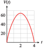
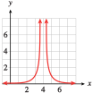
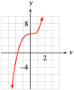
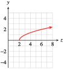

Exercises 2.12 Homework 2.6
¶For Problems 1-8, find the domain and range of the function from its graph.
For Problems 9–2, state the domain and range of the basic function.
9.
\(f(x)=x^3\)
\(g(x)=x^2\)
Domain: all real numbers; Range: all real numbers
Domain: all real numbers; Range: \([0, \infty)\)
10.
\(F(x)=\abs{x} \)
\(G(x)=x\)
11.
\(H(x)=\dfrac{1}{x^2} \)
\(M(x)=\dfrac{1}{x} \)
Domain: all real numbers except zero; Range: \((0, \infty)\)
Domain: all real numbers except zero; Range: all real numbers except zero
12.
\(p(x)=\sqrt[3]{x} \)
\(q(x)=\sqrt{x} \)
13.
The graph shows the elevation of the Los Angeles Marathon course as a function of the distance into the race, \(a = f (t)\text{.}\) Estimate the domain and range of the function. (Source: Los Angeles Times)

Domain: \([0, 26.2]\text{;}\) Range: \([90, 300]\)
14.
The graph shows the federal debt as a percentage of the gross domestic product, as a function of time, \(D = f (t)\text{.}\) Estimate the domain and range of the function. (Source: Office of Management and Budget)
15.
The graph shows the average air temperature as a function of altitude, \(T = f (h)\text{.}\) Estimate the domain and range of the function. (Source: Ahrens, 1998)
Domain: \([0, 600]\text{;}\) Range: \([-90, 700]\)
16.
The graph shows the speed of sound in the ocean as a function of depth, \(S = f (d)\text{.}\) Estimate the domain and range of the function. (Source: Scientific American)
17.
Clinton purchases $\(6000\) of photographic equipment to set up his studio. He estimates a salvage value of $\(500\) for the equipment in \(10\) years, and for tax purposes he uses straight-line depreciation.
Write a formula for the value of the equipment, \(V(t)\text{,}\) after \(t\) years.
State the domain and range of the function \(V(t)\text{.}\)
\(V(t) = 6000 - 550t\)
Domain: \([0, 10]\text{;}\) Range: \([500, 6000]\)
18.
Leslie plans to invest some money in two CD accounts. The first account pays \(3.6\%\) interest per year, and the second account pays \(2.8\%\) interest per year. Leslie would like to earn $\(500\) per year on her investment.
Write a linear equation in general form that relates \(x\text{,}\) the amount Leslie invests at \(3.4\%\text{,}\) and \(y\text{,}\) the amount she invests at \(2.8\%\text{.}\)
Use your equation from part (a) to write \(y\) as a function of \(x\text{,}\) \(y = f (x)\text{.}\)
Find the domain and range of \(f\text{.}\)
19.
The height of a golfball, in feet, \(t\) seconds after being hit is given by the function \(h = f(t)=-16(t-2)^2 + 64\text{.}\)
Graph the function.
State the domain and range of the function and explain what they tell us about the golfball.
- 
Domain: \([0, 4]\text{;}\) Range: \([0, 64].~~\)The ball reaches a height of 64 feet and hits the ground 4 seconds after being hit.
20.
Gameworld is marketing a new boardgame called Synaps. If Gameworld charges \(p\) dollars for the game, their revenue is given by the function \(R = f(p) = -50(p-10)^2+5000\text{.}\)
Graph the function.
State the domain and range of the function and explain what they tell us about the revenue.
21.
In New York City, taxi cabs charge $2.50 for distances up to \(\dfrac{1}{3} \) mile, plus $0.40 for each additional \(\dfrac{1}{5} \) mile or portion thereof. (Source: www.visitnyc.com)
Sketch a graph of \(F(d)\text{,}\) which gives taxi fare as a function of distance traveled, on the domain \(0\lt d \lt 1\text{.}\)
State the range of \(F(d)\) on that domain.
How much will it cost Renee to travel by taxi from Columbia University to Rockefeller Center, a distance of 5.7 miles?

Range: \(\{2.50, 2.90, 3.30, 3.70, 4.10\}\)
$\(13.30\)
22.
If you order from Coldwater Creek, the shipping charges are given by the following table.
| Purchase amount |
Shipping charge |
| Up to $\(25\) | $\(5.95\) |
| $\(25.01\) to $\(50\) | $\(7.95\) |
| $\(50.01\) to $\(75\) | $\(9.95\) |
| $\(75.01\) to 4\(100\) | $\(10.95\) |
State the domain and range of \(S(x)\text{,}\) the shipping charge as a function of the purchase amount, \(x\text{.}\)
23.
The Bopp-Busch Tool and Die Company markets its products to individuals, to contractors, and to wholesale distributors. The company offers three different price structures for its toggle bolts. If you order \(20\) or fewer boxes, the price is $\(2.50\) each. If you order more than \(20\) but no more than \(50\) boxes, the price is $\(2.25\) each. If you order more than \(50\) boxes, the price is $\(2.10\) each. State the domain and range of \(C(x)\text{,}\) the cost of ordering \(x\) boxes of toggle bolts.
Domain: nonnegative integers; The range includes all whole number multiples of \(2.50\) up to \(20\times 2.50 = 50\text{,}\) all integer multiples of \(2.25\) from \(21\times 2.25 = 47.25\) to \(50 \times 2.25 = 112.50\) and all integer multiples of \(2.10\) from \(51\times 2.10 = 107.10\) onwards: \(0, 2.50, 5.00, 7.50, \ldots, 50\text{,}\) \(47.25, 49.50, 51.75, \ldots , 112.50\text{,}\) \(107.10, 109.20, 111.30, \ldots\)
24.
The Java Stop uses paper cups at a rate of \(300\) per day. At opening on Tuesday morning Java Stop has on hand \(1200\) paper cups. On Friday mornings Java Stop takes delivery of a week's worth of cups.
Write a piecewise function for the number of cups Java Stop has on hand for one week, starting Tuesday morning.
Graph the function.
State the domain and range of the function.
For Problems 25-30, find the domain of each function algebraically. Then graph the function, and use the graph to help you find the range.
25.
\(f(x)=\dfrac{1}{(x-4)^2} \)
\(h(x)=\dfrac{1}{x^2}-4 \)
-
\(f (x)\) domain: \(x \ne 4\text{;}\) Range: \((0,\infty)\)
 -
\(h (x)\) domain: \(x \ne 0\text{;}\) Range: \((-4,\infty)\)

26.
\(g(t)=\dfrac{1}{t}+2 \)
\(F(t)=\dfrac{1}{t+2} \)
27.
\(G(v)=v^3+35 \)
\(H(v)=(v+5)^3 \)
-
\(G(v)\) domain: all real numbers; Range: all real numbers
 -
\(H(v)\) domain: all real numbers; Range: all real numbers

28.
\(h(n)=3+(n-1)^2 \)
\(g(n)=3-(n+1)^2 \)
29.
\(T(z)=\sqrt{z-2} \)
\(S(z)=\sqrt{z}-2 \)
-
\(G(v)\) domain: \([2,\infty)\text{;}\) Range: \([0,\infty)\)
 -
\(H(v)\) domain: \([0,\infty)\text{;}\) Range: \([-2,\infty)\)

30.
\(Q(x)=4-\abs{x} \)
\(P(x)=\abs{4-x} \)
For Problems 31-38, decide whether the given value is in the range of the function. If so, find the domain value(s) that produce each range value.
31.
\(f(x)=6-\abs{2x+4} \)
\(f(x)=8 \)
\(f(x)=-2 \)
Not in range
\(x = -6\) or \(x = 2\)
32.
\(g(x)=(x-5)^3+1 \)
\(g(x)=0 \)
\(g(x)=-7 \)
33.
\(h(t)=4+2\sqrt[3]{t} \)
\(h(t)=-4 \)
\(h(t)=0 \)
\(t = -64\)
\(t=-8\)
34.
\(F(t)=12+0.5(t-2)^2 \)
\(F(t)=10 \)
\(F(t)=20 \)
35.
\(G(w)=3+\dfrac{2}{w-1} \)
\(G(w)=-1 \)
\(G(w)=3 \)
\(w=\dfrac{1}{2} \)
Not in range
36.
\(H(n)=\dfrac{4}{(n+2)^2}-5 \)
\(H(n)=-6 \)
\(H(n)=-1 \)
37.
\(Q(h)=2+\sqrt{h+5} \)
\(Q(h)=1 \)
\(Q(h)=5 \)
Not in range
\(h=4\)
38.
\(P(q)=8-\sqrt{4-q} \)
\(P(q)=4 \)
\(P(q)=12 \)
For Problems 39–50,
Use a graphing calculator to graph each function on the given domain. Using the
TRACEkey, adjust Ymin and Ymax until you can estimate the range of the function.Verify your answer algebraically by evaluating the function. State the domain and range in interval notation.
39.
\(f (x) = x^2 - 4x \text{;} ~~ -2\le x\le 5\)
Domain: \([-2, 5]\text{;}\) Range: \([-4, 12]\)
40.
\(g(x)=6x-x^2 \text{;} ~~ -1\le x\le 5\)
41.
\(g(t)=-t^2-2t \text{;} ~~ -5\le t\le 3\)
Domain: \([-5, 3]\text{;}\) Range: \([-15, 1]\)
42.
\(f(t)=-t^2-4t \text{;} ~~ -6\le t\le 2\)
43.
\(h(x)=x^3-1 \text{;} ~~ -2\le x\le 2\)
Domain: \([-2, 2]\text{;}\) Range: \([-9, 7]\)
44.
\(q(x)=x^3+4 \text{;} ~~ -3\le x\le 2\)
45.
\(F(t)=\sqrt{8-t} \text{;} ~~ -1\le t\le 8\)
Domain: \([-1, 8]\text{;}\) Range: \([0, 3]\)
46.
\(G(t)=\sqrt{t+6} \text{;} ~~ -6\le t\le 3\)
47.
\(G(x)=\dfrac{1}{3-x} \text{;} ~~ -1.25\le x\le 2.75\)
Domain: \([-1.25, 2.75]\text{;}\) Range: \(\left[\dfrac{4}{17} , 4\right]\)
48.
\(H(x)=\dfrac{1}{x-1} \text{;} ~~ -3.25\le x\le -1.25\)
49.
\(G(x)=\dfrac{1}{3-x} \text{;} ~~ 3\lt x\le 6\)
Domain: \((3, 6]\text{;}\) Range: \(\left[-\infty,\dfrac{-1}{3} \right]\)
50.
\(H(x)=\dfrac{1}{x-1} \text{;} ~~ 1\lt x\le 4\)
51.
Show that the graph of \(y=\sqrt{16-x^2} \) is a semicircle.
State the domain and range of the function.
-
Graph the function in the window
\begin{align*} {\text{Xmin}} \amp = -6 \amp\amp {\text{Xmax}} = 6\\ {\text{Ymin}} \amp = 0 \amp\amp {\text{Ymax}} = 8 \end{align*}In what way is the calculator’s graph misleading?
(Hint: Write the equation in the form \(x^2 + y^2 = r^2\text{.}\) See Algebra Skills Refresher Section A.11 to review circles.)
Squaring both sides of the equation gives the equation of the circle centered on the origin with radius \(4\text{,}\) but the points in the third and fourth quadrants are extraneous solutions introduced by squaring. (The original equation allowed only \(y\ge 0\text{.}\))
Domain: \([-4, 4]\text{;}\) Range: \([0, 4]\)
-
The calculator does not show the graph extending down to the \(x\)-axis.
52.
For what values of \(x\) is the function \(y = \dfrac{2x - 8}{x-2}\) undefined?
Graph the function in the standard window. In what way is the calculator's graph misleading?
-
Graph the function in the window
\begin{align*} {\text{Xmin}} \amp = -9.4 \amp\amp {\text{Xmax}} = 9.4\\ {\text{Ymin}} \amp = -10 \amp\amp {\text{Ymax}} = 10 \end{align*}State the domain and range of the function.
In Problems 53–60, find the domain and range of each transformation of the given function.
53.
\(f(x)=\dfrac{1}{x^2} \)
\(y=f(x-2) \)
\(y=f(x)-2 \)
\(y=f(x-3)-5 \)
Domain: \(x \ne 2\text{;}\) Range: \((0, \infty)\)
Domain: \(x \ne 0\text{;}\) Range: \((-2, \infty)\)
Domain: \(x \ne 3\text{;}\) Range: \((-5, \infty)\)
54.
\(f(x)=\sqrt{x} \)
\(y=-f(x) \)
\(y=4+f(x) \)
\(y=4-f(x) \)
55.
\(f(x)=x^2 \)
\(y=-2f(x) \)
\(y=6-2f(x) \)
\(y=6-2f(x+3) \)
Domain: all real numbers; Range: \((-\infty,0)\)
Domain: all real numbers; Range: \((-\infty,6]\)
Domain: all real numbers; Range: \((-\infty,6]\)
56.
\(f(x)=\dfrac{1}{x} \)
\(y=3f(x) \)
\(y=3+f(x-1) \)
\(y=3-f(x-1) \)
57.
The domain of \(f\) is \([0, 10]\) and the range is \([-2, 2]\text{.}\)
\(y=f(x-3) \)
\(y=3f(x) \)
\(y=2f(x-5) \)
Domain: \([3,13]\text{;}\) Range: \([-2,2]\)
Domain: \([0,10]\text{;}\) Range: \([-6,6]\)
Domain: \([5,15]\text{;}\) Range: \([-4,4]\)
58.
The domain of \(f\) is \([-4, 4]\) and the range is \([3, 10]\text{.}\)
\(y=f(x)+10 \)
\(y=f(x+10) \)
\(y=f(x-1)+4 \)
59.
The domain of \(f\) is \((0,+\infty)\) and the range is \((0, 1)\text{.}\)
\(y=5f(x) \)
\(y=3f(x+2) \)
\(y=2f(x-3)+2 \)
Domain: \((0,\infty)\text{;}\) Range: \((0,5)\)
Domain: \((-2,\infty)\text{;}\) Range: \((0,3)\)
Domain: \((3,\infty)\text{;}\) Range: \((2,4)\)
60.
The domain of \(f\) is \((-1, 1)\) and the range is \((-\infty, 0)\text{.}\)
\(y=f(x+1) \)
\(y=3-f(x+1) \)
\(y=4+2f(x-1) \)
In Problems 61–64, use a graphing calculator to explore some properties of the basic functions.
61.
Graph \(f (x) = x^2\) and \(g(x) = x^3\) on the domain \([0, 1]\) and state the range of each function. On the interval \((0, 1)\text{,}\) which is greater, \(f (x)\) or \(g(x)\text{?}\)
Graph \(f (x) = x^2\) and \(g(x) = x^3\) on the domain \([1, 10]\) and state the range of each function. On the interval \((1, 100)\text{,}\) which is greater, \(f(x)\) or \(g(x)\text{?}\)
\(f(x)\)
\(g(x) \)
62.
Graph \(f (x) =\sqrt{x} \) and \(g(x) =\sqrt[3]{x} \) on the domain \([0, 1]\) and state the range of each function. On the interval \((0, 1)\text{,}\) which is greater, \(f (x)\) or \(g(x)\text{?}\)
Graph \(f (x) = \sqrt{x}\) and \(g(x) = \sqrt[3]{x}\) on the domain \([1, 100]\) and state the range of each function. On the interval \((1, 100)\text{,}\) which is greater, \(f(x)\) or \(g(x)\text{?}\)
63.
Graph \(f (x) =\dfrac{1}{x} \) and \(g(x) = \dfrac{1}{x^2}\) on the domain \([0.01, 1]\) and state the range of each function. On the interval \((0, 1)\text{,}\) which is greater, \(f (x)\) or \(g(x)\text{?}\)
Graph \(f (x) = \dfrac{1}{x}\) and \(g(x) = \dfrac{1}{x^2}\) on the domain \([1, 10]\) and state the range of each function. On the interval \((1, \infty)\text{,}\) which is greater, \(f(x)\) or \(g(x)\text{?}\)
\(g(x)\)
\(f(x) \)
64.
Graph \(F (x) =\abs{x^3} \) in the ZDecimal window. How does the graph compare to the graph of \(y = x^3\text{?}\)
Graph \(G (x) = \abs{\dfrac{1}{x}}\) in the ZDecimal window. How does the graph compare to the graph of \(y = \dfrac{1}{x}\text{?}\)
65.
The number of hours of daylight on the summer solstice is a function of latitude in the northern hemisphere. Give the domain and range of the function.
Domain: \([0\degree , 90\degree]\text{;}\) Range: \([12 , 24]\)
66.
A semicircular window has a radius of 2 feet. The area of a sector of the window (a pie-shaped wedge) is a function of the angle at the center of the circle. Give the domain and range of this function.